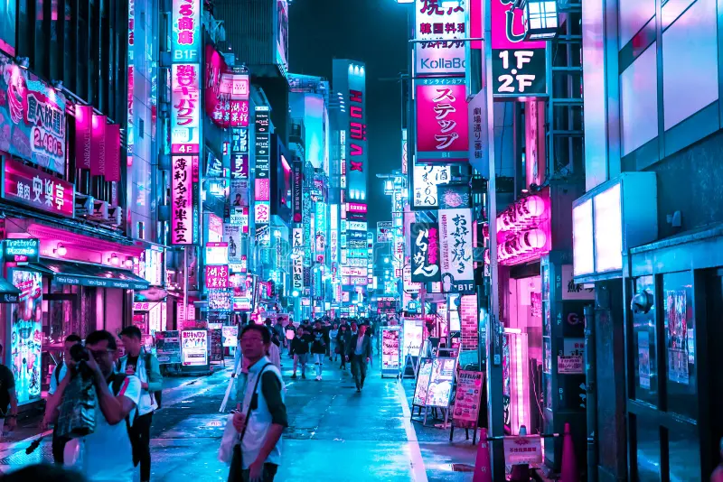

A Gallery of Greats

The Daily Diviner
A complete rebranding and content strategy that increased readership by 300%.

Wizarding Wares Weekly
An email campaign that resulted in the highest quarterly sales of enchanted artifacts.

Gringotts Gazette
A series of articles on magical finance that established our client as a thought leader.